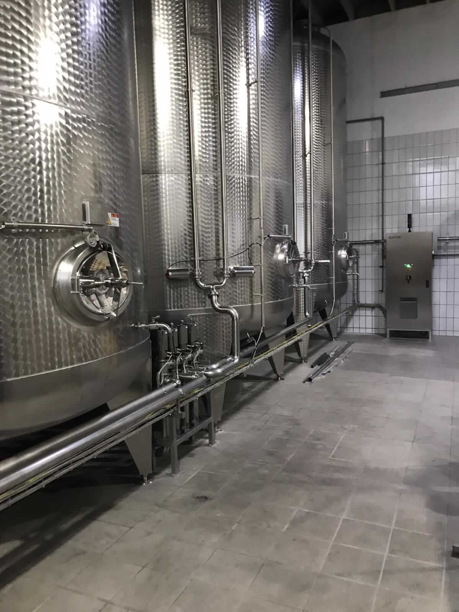
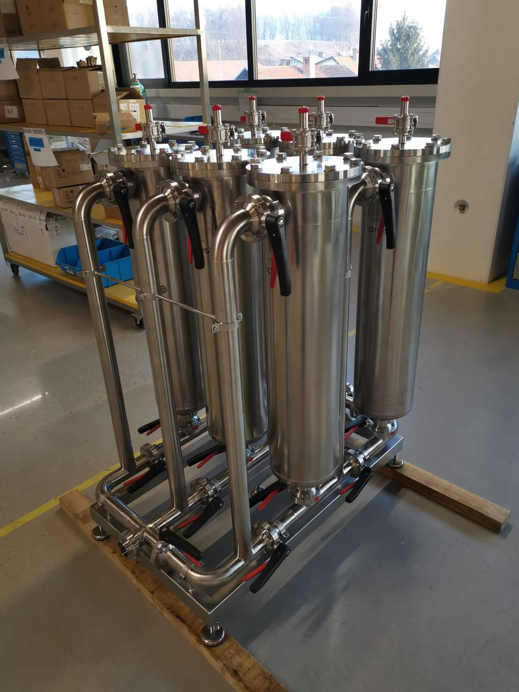
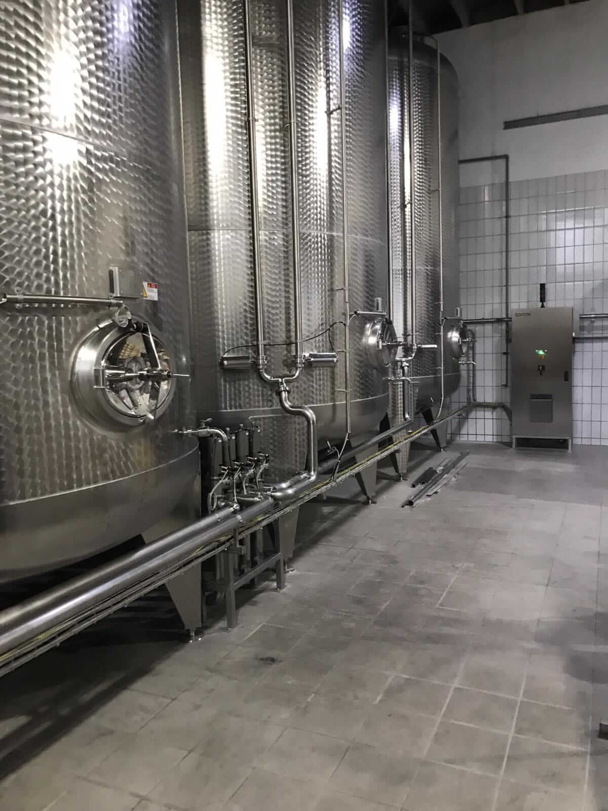
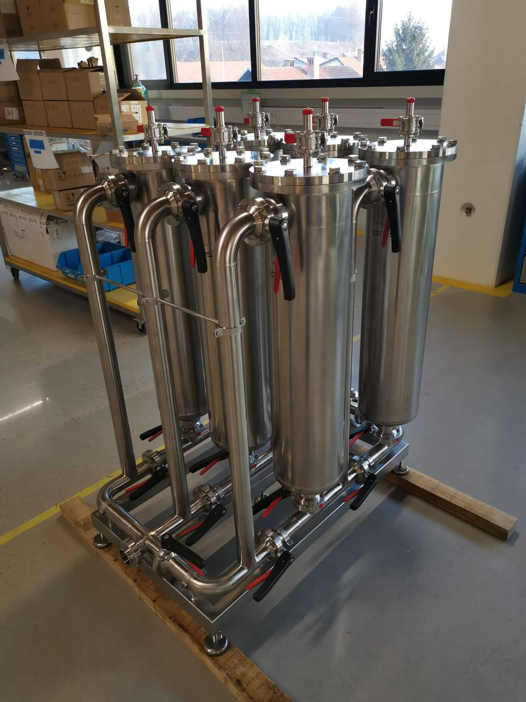
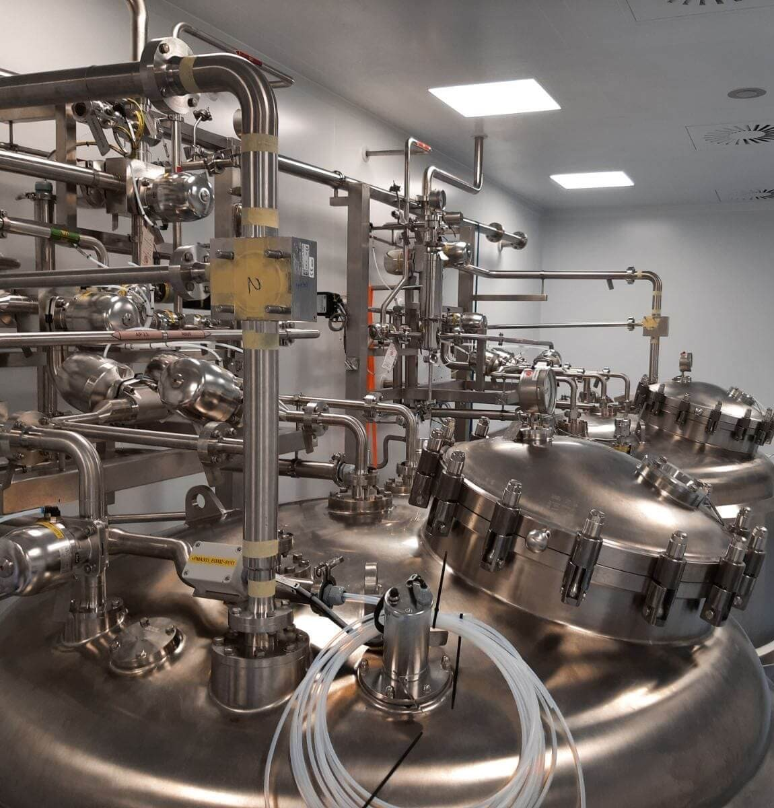
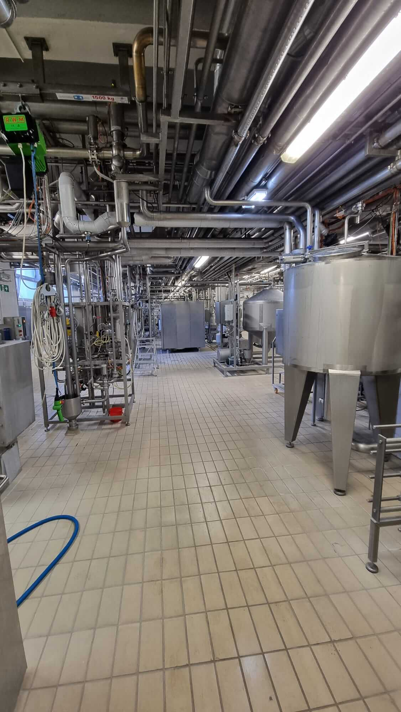
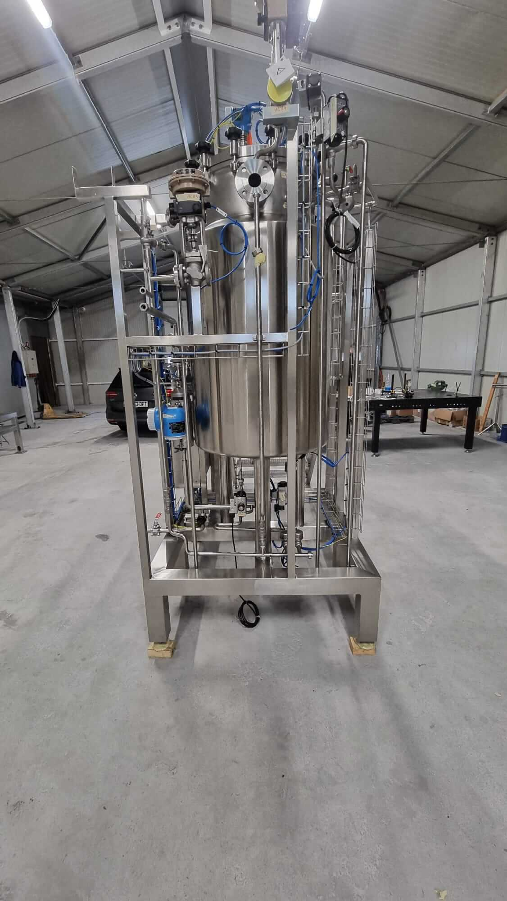
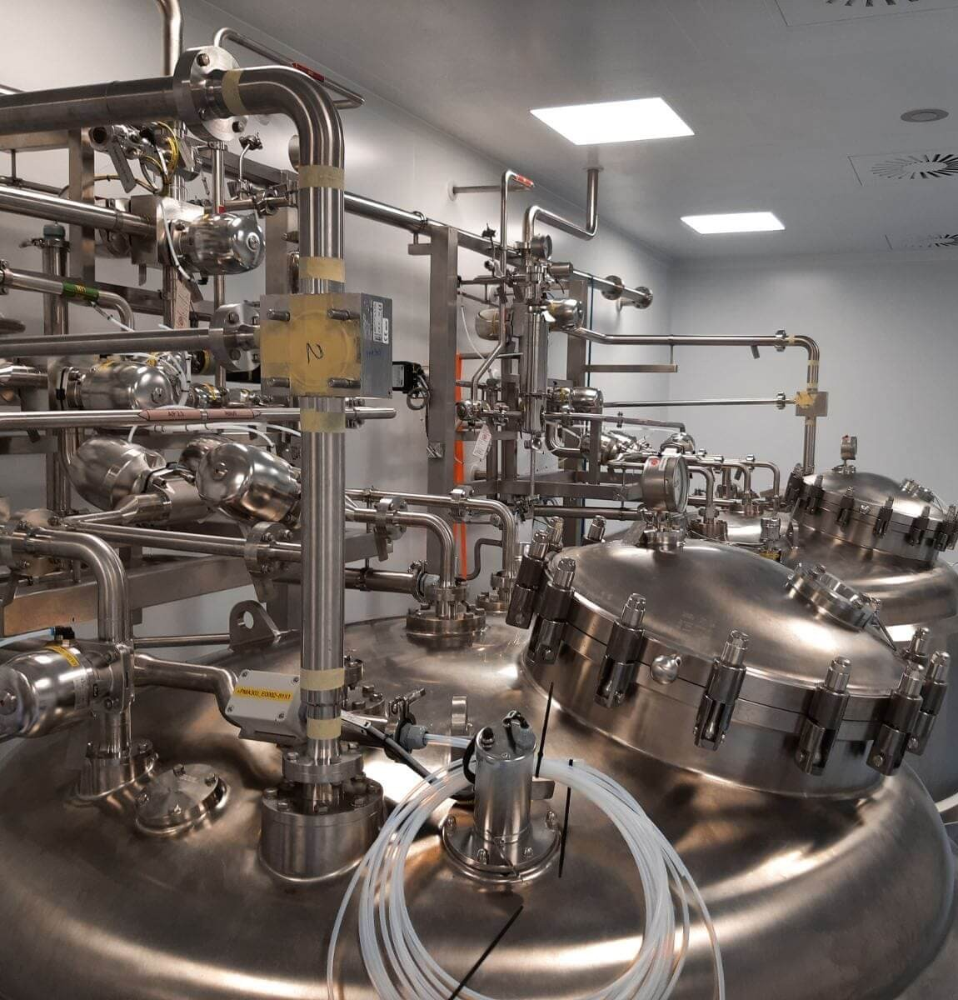
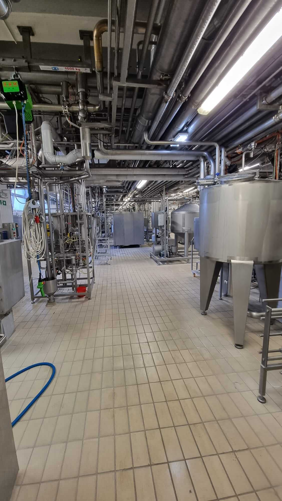
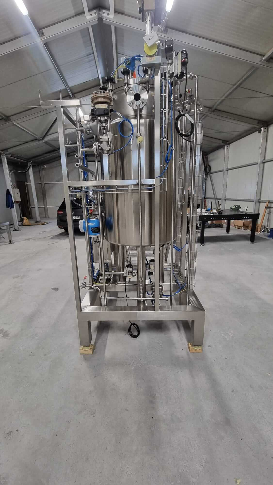

PREHRAMBENA INDUSTRIJA
BTINOX kot zanesljiv partner prehrambene industrije nudi tehnološke rešitve za varnejše izdelke, učinkovitejše procese in večjo produktivnost.
Strankam v BTINOX-u zagotavljamo celovito načrtovanje in izvedbo proizvodnih linij, izdelavo naprednih inox konstrukcij ter uvajanje sodobnih tehnologij, ki izboljšujejo kakovost izdelkov, zmanjšujejo stroške in povečujejo učinkovitost delovanja.
PASTERIZACIJA
Infekcije in onesnaženja z mikroorganizmi, ki nastanejo med proizvodnim procesom, pogosto odkrijemo šele z zamikom. Temu tveganju se lahko izognemo z uporabo postopka pasterizacije.
Rekuperativna zasnova sistema pretočne pasterizacije omogoča povračilo tudi do 96 % dovedene toplote, zaradi česar je ta postopek ena najstroškovno učinkovitejših metod toplotne obdelave v uporabi danes.
▼
Mikrobiološko nestabilni izdelki, ki so zapakirani in dostavljeni kupcu, lahko za proizvajalca predstavljajo resen izziv. Okužbe in onesnaženja z mikroorganizmi, ki nastanejo med proizvodnim procesom, so pogosto zaznana šele po določenem časovnem zamiku. Temu tveganju se lahko učinkovito izognemo s postopkom pasterizacije.
Najzanesljivejši način za ohranjanje stabilne kakovosti in polnega okusa izdelka je pasterizacija oziroma pretočna pasterizacija. S termično inaktivacijo mikroorganizmov proizvajalec določi mikrobiološke lastnosti svojega proizvoda. Kot pri vseh metodah zmanjšanja prisotnosti mikroorganizmov je učinkovitost odvisna od začetnega števila organizmov v neobdelanem napitku. Merilo učinka toplotne obdelave predstavlja število doseženih pasterizacijskih enot (PU).
V pretočnem pasterizatorju je izdelek tik pred pakiranjem neprestano podvržen nežni obdelavi. Mikroorganizmi, ki bi lahko pokvarili pijačo, se hitro uničijo, ne da bi to vplivalo na kakovost. Ta postopek proizvajalcem omogoča zagotavljanje trajne kakovosti svojih izdelkov.
Pretočna pasterizacija je zanesljiva in ekonomična metoda, ki zagotavlja vrhunsko kakovost. Posebno pozornost namenjamo varnosti procesa, kar omogoča doseganje izdelkov najvišje kakovosti. Naša zasnova upošteva vse ključne parametre, s čimer preprečuje kakršnokoli spremembo okusa ali barve izdelka.
Naša pasterizacijska enota izkazuje visoko učinkovitost. Zaradi rekuperativne zasnove sistema pretočne pasterizacije se včasih povrne kar 96 odstotkov dodane toplote. Prav zato je pretočna pasterizacija danes najbolj stroškovno učinkovita med vsemi trenutno uporabljenimi toplotnimi postopki.
Zasnova in delovanje sistema morata biti posebej prilagojena vrsti proizvoda, ki bo obdelan. Na podlagi dolgoročnega načrtovanja se osredotočamo na higiensko brezhibne, visokokakovostne procesne module in komponente, ki zagotavljajo maksimalno dolgoročno zanesljivost.
ENOTA ZA ČIŠČENJE CIP
Zasnova in funkcionalnost enote CIP močno vplivata na tekoče stroške in higienske standarde. Pravilna postavitev zagotavlja učinkovitost čiščenja, s tem pa tudi varnost proizvodnje in kakovost končnega izdelka.
O ustrezni konfiguraciji sistema odločajo stroški čistil, poraba vode, razpoložljivost medijev ter sami proizvodni postopki. Z namestitvijo sistemov, prilagojenih posameznim operativnim področjem, je zagotovljena dodatna varnost.
▼
Avtomatskemu CIP sistemu se pogosto posveča manj pozornosti kot glavnim procesom, vendar pravilna zasnova in funkcionalnost močno vplivata na tekoče stroške in higienske standarde. Pravilna postavitev zagotavlja učinkovitost čiščenja, varno proizvodnjo ter kakovost piva. O ustrezni konfiguraciji sistema odločajo stroški čistil, poraba vode, razpoložljivost medijev in sami proizvodni postopki.
Najpomembnejši dejavniki v odločanju v obratu so: visoki donosi obrata, optimalni časi zasedenosti posod in minimalna poraba primarne energije. Naš koncept CIP čiščenja uporablja posebne mešalne varnostne ventile za varno ločevanje skupin posod in cevi. To omogoča neodvisno čiščenje posod in cevi, tudi če proizvodnja v drugih oddelkih ali sistemih v obratu poteka nemoteno.
Za varnost izdelkov skrbimo na vsaki stopnji procesa. Upoštevamo vse lokalne pogoje, posebne zahteve naročnika ter poti do opaznih prihrankov.
Kakšne so naše prednosti:
- Z uvedbo sistema CIP pridobite prednost v času in zmanjšate stroške dela.
- Proizvodni proces in CIP proces lahko potekata sočasno.
- Zmanjšana poraba čistilnih sredstev
- Zmanjšana poraba energije med čiščenjem
- Ker je varnost izdelkov zagotovljena v celotnem cevnem sistemu, se lahko proizvodnja začne prej – s tem nastane dodatna zmogljivost.
- Praktično orodje za povečanje proizvodnje
- Največja izkoriščenost opreme, zlasti v času proizvodnih konic.

 




CEVNA NAPELJAVA IN NAMESTITEV
Cevna napeljava visoke kakovosti zahteva vrhunske standarde, še posebej v živilski industriji. Pri vseh naših aktivnostih je naročnik vedno v središču pozornosti. Naše storitve zajemajo načrtovanje, koordinacijo, montažo in dokumentiranje procesnih sistemov, pa tudi inšpekcijske preglede za zagotavljanje kakovosti in nemoten zagon.
NAČRTOVANJE IN INŽENIRING
Od izometričnih risb do specifikacij razredov cevi, od podrobnega inženiringa do vodenja projekta, Btinox prevzame upravljanje projektov neposredno na lokaciji, pri naročniku ali v svojem tehnološkem centru. Za natančen inženiring redno uporabljamo sodobna CAE orodja (računalniško podprto inženirstvo).
Ne glede na to, ali gre za postavitev povsem novega obrata, širitev, preureditev ali modernizacijo obstoječega procesnega obrata, so naši inženirji tu, da vam z vrhunskim znanjem in izkušnjami nudijo podporo ter zagotavljajo odlične storitve.
▼
Z uporabo različnih tehnologij lahko nudimo rešitve tako za posamezne kose opreme kot za celotne proizvodne linije piva, mlečnih izdelkov, živil in sokov. Naša filozofija oblikovanja in procesnega inženirstva temelji na najvišjih evropskih standardih glede varčevanja z energijo, varnosti izdelkov in maksimalne zmogljivosti obrata, hkrati pa zagotavlja stroge higienske in varnostne kriterije. Naše znanje in dolgoletne izkušnje strankam zagotavljajo, da prejmejo opremo, ki je temeljito preizkušena in popolnoma primerna za določen proces.
Poleg dobave visokokakovostne procesne opreme nudimo tudi različne inovativne rešitve za avtomatizacijo procesov in storitev – od elektronskega krmiljenja procesov do integriranih omrežnih sistemov po celotnem podjetju.
Dodatna prednost je naše obsežno poznavanje procesov in industrije, ki se odraža tako pri izbiri strojne opreme kot pri funkcionalnosti programske opreme. Naše rešitve zagotavljajo jasno preglednost proizvodnega procesa, optimalno uporabo virov in zagotavljanje kakovosti izdelkov. Poleg tega so del našega poslovanja tudi strokovno vodenje projektov, montaža v obratu, zagon in usposabljanje, kot tudi poprodajne storitve in dobava rezervnih delov.
 





AVTOMATIZACIJA
Različni procesi v živilski industriji, kot je mlekarstvo, so prilagojeni proizvodnji različnih mlečnih izdelkov.
Posledično je avtomatizacija teh procesov prav tako raznolika in razvejana. Btinox je za potrebe avtomatizacije proizvodnih obratov razvil lasten koncept delovanja in nadzora.
▼
Btinox je sistemski povezovalec z obsežnim strokovnim znanjem s področja procesne tehnologije. Poleg rešitev po meri lahko ponudimo tudi popolnoma avtomatske rešitve za širok spekter avtomatizacijske in informacijske tehnologije.
Nudimo preizkušene in na terenu potrjene rešitve, ki so individualno prilagojene vašim procesom. Naši strokovnjaki za nadzor procesov izbirajo ustrezna programska orodja, ki so na voljo na trgu, in jih prilagodijo vašim potrebam. Kombinacija našega procesnega inženiringa ter poglobljenega poznavanja industrije in specifičnih zahtev je ključna za pravilne odločitve.
Raznolikost – naravna prednost tudi v inženiringu nadzora procesov. S poudarkom na sistemski integraciji združujemo naše znanje procesnega in industrijskega inženiringa s programsko opremo, ki je na voljo na trgu.
Če je potrebno, smo z ustreznimi prilagoditvami dovolj fleksibilni, da izvedemo rešitve, popolnoma prilagojene lokalnim razmeram.
Tehnologija nadzora procesov pod vodstvom strokovnjakov procesnega inženiringa. Naša mreža specialistov zagotavlja, da trg oskrbujemo s preverjenimi in brezhibno avtomatiziranimi rešitvami.
Najsodobnejša kontrolna orodja, ki jih uporabljamo, dokazujejo naše poglobljeno poznavanje procesov in nam omogočajo zagotavljanje stabilnih procesnih pogojev z največjo učinkovitostjo in minimalno porabo energije.
MED
Z uporabo naših dolgoletnih izkušenj v industriji pijač in živil ter pri nežnem procesiranju izdelkov izdelujemo nizkotemperaturne enote za predelavo medu, primerne za majhne, srednje in velike količine. Tako kot vsa naša oprema tudi te enote strankam omogočajo nemoteno in učinkovito ravnanje z izdelkom, pri čemer kakovost medu ostaja popolnoma ohranjena, skladno s strogimi pravili in standardi v industriji medu.